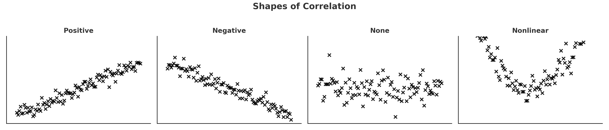
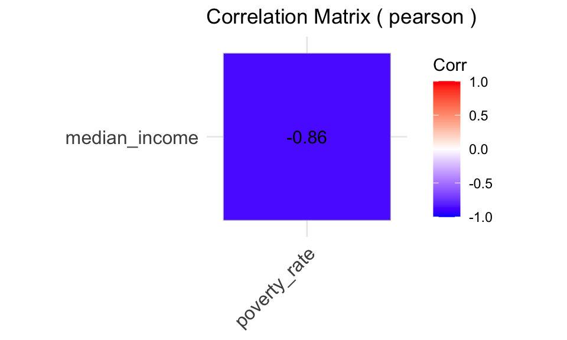
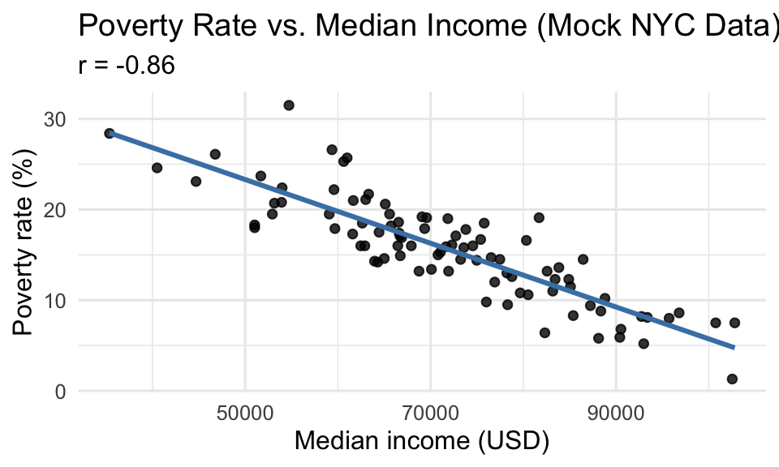

Correlation describes how two variables move together
→ When one changes, does the other tend to change too?
It shows direction (positive or negative) and strength (tight vs. loose pattern)
Examples
Density of Buildings vs. Population Density → positive
Median Income vs. Poverty Rate → negative
Household size vs. Shoe Size → none
Dynamics of Correlation - ‘shape of a relationship’
Correlation is the shape of a relationship, not its cause.

Dynamics of Correlation - Measurement
The Correlation Coefficient (r)
Measures the strength and direction of a linear relationship between two variables.
Operates as a ‘unitless measurement’: how much two variables move together, regardless of scale.
Dynamics of Correlation - Measurement
Computed as standardized covariance
regular covariance can be any value, standardizing it allows for an easier comparison.
Range: –1 → 0 → +1
+1 → perfect positive
0 → no linear relationship
–1 → perfect negative
Dynamics of Correlation - Measurement
This is the formula for the Pearson correlation coefficient, often written as r. It measures how much two variables move together, relative to their individual variability:
\[
r = \frac{\operatorname{Cov}(X,Y)}{\sigma_X \,\sigma_Y}
\]
Dynamics of Correlation - Measurement
Symbol
Meaning
Description
Cov(X, Y)
Covariance between X and Y
Measures how X and Y vary together
σₓ
Standard deviation of X
How much X varies around its mean.
σᵧ
Standard deviation of Y
How much Y varies around its mean.
Dynamics of Correlation - Measurement
Covariance itself is unscaled — it depends on the units of X and Y (e.g., inches × pounds).
Dividing by σXσY standardizes it.
The result is unitless, always between –1 and +1, so we can compare correlations across different variables.
library(ggcorrplot)ggcorrplot(M, lab =TRUE, type ="lower",title =paste("Correlation Matrix (", method_opt, ")"))

📈 Step 4 — Visualize the Relationship
# Focused scatterplot with r annotationr_val <-round(M[1,2], 2)ggplot(nyc_tracts, aes(median_income, poverty_rate)) +geom_point(color="black", alpha=0.8) +geom_smooth(method="lm", se=FALSE, color="steelblue") +labs(title="Poverty Rate vs. Median Income (Mock NYC Data)",subtitle=paste("r =", r_val),x="Median income (USD)",y="Poverty rate (%)") +theme_minimal(base_size=12)

⚠️ Common Pitfalls in Correlation Analysis
Correlation assumes that each observation is independent and drawn from a consistent process.
Urban data often break this rule — observations are close together in space, time, and social context, which can create misleading or inflated correlations.
🧭 1. Spatial Autocorrelation
What happens: Nearby locations often share similar values (e.g., rent, pollution, building age).
The same pattern that makes a city spatially continuous also means your data points are not independent.
Effect: Correlation coefficients can appear artificially high because values co-move simply due to proximity.
Check for:
Clusters on maps
Moran’s I, Geary’s C, or Local Indicators of Spatial Association (LISA)
🌆 2. Data Density and Repetition
What happens: Many urban datasets include duplicate or overlapping spatial units
(e.g., multiple 311 calls for the same address, or repeated building entries).
Effect: Non-independent observations inflate correlation and reduce interpretability.
Mitigation:
Collapse to unique IDs (parcel, BIN, BBL, or address)
Summarize or average repeated measures per unit
Inspect temporal or locational clusters
🧮 3. Spurious Correlation
What happens: Two variables rise together over time or space due to a common underlying driver, not a real relationship.
Example: both rent and coffee shop density rise across NYC so a relationship seems reasonable; however, the controlling, significant factor is neighborhood affluence.
📅 4. Temporal Alignment Issues
What happens: Correlating variables measured at different times (e.g., 2024 crime vs. 2020 income) introduces lag bias.
Mitigation:
Align time windows before computing r
📈 5. Over-Interpretation of Significance
What happens: With large spatial datasets, nearly everything becomes “statistically significant.”
Mitigation:
Focus on effect size (|r|) and spatial pattern, not just p-values
Visualize — context matters more than raw statistics